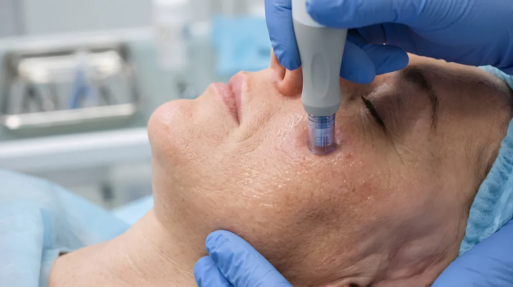

Beim medizinischen Microneedling setzen feinste Nadeln kontrollierte Mikro-Reize in der Haut. Die Haut reagiert mit ihrem natürlichen Reparaturprogramm: Kollagen- und Elastinbildung. Das Ergebnis entsteht nicht über Nacht – dafür aus Ihrer eigenen Haut heraus.

Wofür wird die Behandlung eingesetzt?
- Feinere Poren und gleichmäßigerer Teint
- Feine Linien und beginnende Fältchen
- Aknenarben und unebene Hauttextur
- Fahle, müde wirkende Haut
- In Kombination mit Wirkstoffen oder PRP für intensivere Effekte
Für wen ist die Behandlung geeignet?
Für alle, die ihr Hautbild nachhaltig verbessern möchten – ohne Injektion von Fremdmaterial. Meist sind 3–6 Sitzungen im Abstand von etwa 4 Wochen sinnvoll; danach empfiehlt sich eine regelmäßige Erhaltungsbehandlung in längeren Abständen. Den Plan erstellen wir individuell.
Wann ist die Behandlung nicht geeignet?
Bei aktiver Akne mit entzündeten Läsionen, aktiven Hautinfektionen, Neigung zu Keloidnarben sowie in der Schwangerschaft. Details klären wir im Vorgespräch.
Wie läuft die Behandlung ab?
Jede Behandlung beginnt bei mir mit einem ausführlichen Beratungsgespräch – Analyse, ehrliche Einschätzung und Aufklärung inklusive. Nach der Reinigung wird eine Betäubungscreme aufgetragen. Anschließend wird die Haut mit einem medizinischen Needling-Gerät systematisch behandelt, danach beruhigende Pflege aufgetragen. Die Haut ist danach gerötet – vergleichbar mit einem leichten Sonnenbrand.
Mögliche Nebenwirkungen
Rötung und Spannungsgefühl für 1–2 Tage sind normal und Teil des Wirkprinzips. Vorübergehende Trockenheit oder feine Schüppchen sind möglich. Konsequenter Sonnenschutz ist nach der Behandlung Pflicht.
Verwendete Produkte
Medizinisches Needling-System mit sterilen Einweg-Aufsätzen; ergänzende Wirkstoffe je nach Hautbedürfnis.
Kosten
mit Microbotox und NCTF 135 HA oder individueller Wirkstoffcocktail, Pflegemaske, Aftercare Pflege für zu Hause
Alle Preise inklusive gesetzlicher Abgaben. Der genaue Aufwand wird im ärztlichen Beratungsgespräch (€ 70,–) besprochen.
Beratungstermin vereinbarenUnverbindlich, mit ehrlicher Einschätzung.
Beratungstermin vereinbarenBehandlungsort
Die Behandlung findet in meiner Ordination in Graz-Andritz statt: Andritzer Reichsstraße 44, 8045 Graz. Termine nach Vereinbarung.
Ihre Ärztin
Dr. Anna Kovács ist Wahlärztin für Allgemeinmedizin und führt eine Ordination für ästhetische Behandlungen in Graz. Sie bildet sich laufend im In- und Ausland fort und ist eine von drei Empfängerinnen weltweit des 25-Jahre-Jubiläumsstipendiums der American Academy of Aesthetic Medicine.
Das könnte Sie auch interessieren
Häufige Fragen
Wie viele Sitzungen brauche ich?
Für strukturelle Verbesserungen – etwa bei Narben – sind meist 3–6 Sitzungen sinnvoll. Für Frische und Ausstrahlung kann auch eine einzelne Auffrischung passen.
Kann ich danach arbeiten gehen?
Am Behandlungstag ist die Haut deutlich gerötet. Viele planen die Behandlung vor einem freien Tag oder dem Wochenende.
Ist Microneedling schmerzhaft?
Dank Betäubungscreme empfinden die meisten die Behandlung als gut erträglich – eher ein Kribbeln als Schmerz.